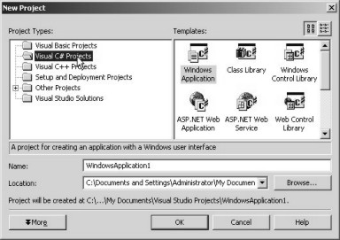
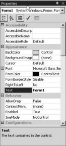
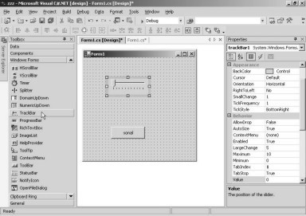
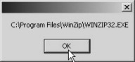

1. Working with the Framework
The lacuna with software products in this day and age is that, they comport themselves like a jealous mistress. Software companies are no strangers to the fact that programmers who harness the power of a software product, are a fickle lot, and are adept at changing loyalties at the drop of a hat. Hence, they go overboard, essaying to entice programmers by introducing innovative and improved software products.
Only till recently, the C++ programmers used Visual C++, the Visual Basic programmers employed Visual Basic, while the Internet clique utilized an altogether different software product. Thus, it had the makings of the Tower of Babel, wherein, each product was tailored to cater for a specific application. Therefore, the programmers were compelled to learn about varied products and user interfaces, in order to keep pace with the demands of executing software projects. This sure isn’t the most productive way to spend one’s life. Another dimension to this predicament was that, every product offered unique features, which appealed to different programmers, making them extremely fond of that product. This led to immense competition amongst the software products, to gain favour with the maximum number of programmers.
Microsoft too came alive to this problem and therefore launched a singular product called Visual Studio.Net, which is compatible with all types of applications. By doing so, they have, in effect, gleaned the best of all their existing products and created Visual Studio.Net. This has led to nullification of all their earlier software products. Thus, programmers can now write a large variety of applications by using a single product, rather than bearing themselves down with Visual Basic, Visual Studio.Net, Visual Interdev, etc.
Visual Studio.Net is a GUI product, whereby, most programmers are provided with the flexibility of developing their own unique style of exploiting it. Thus, just as water finds its own level in a vessel, so also does the programmer, on using this software product. However, there are few ground rules that provide the roadmap to the optimum techniques of working with any screen-based product. You may follow the rules prescribed by the experts, but, since you are reading this book, we would prefer you to follow the methodology stipulated by us.
When we selected the option of Visual Studio.Net 7.0 from the program group of Microsoft Visual Studio.NET 7.0 in the Programs option of Start Menu (Ctrl+Esc) , it resulted in loading the framework for Visual Studio.Net.
The screen labeled 1.1 appeared initially, followed immediately by the screen labeled 1.2. However, your experience on starting the program may vary.
|
Screen 1.1 |
Screen 1.2 |
You may see a start page that displays details about the last project or program that you had been working on, as shown in screen 1.3. Clicking on any of the listed project names would open that project. The software product works under the supposition that the programmers would prefer to commence a session with the same programs that they had been working on, the last time they quit out of Visual Studio.Net Framework.
|
Screen 1.3 |
Screen 1.4 |
In this book, we start with a clean slate, without any windows cluttering the screen. So, if you have any projects displayed on the screen, click on the x of the child windows to close them. This is displayed in screen 1.4.
Despite these being optional, we would still request you to follow the steps stipulated here, if you have a yearning to master the product. Thus, we shall commence with a blank screen as shown in screen 1.5.
|
|
|
|
Screen 1.5 |
Screen 1.6 |

In order to build an application using Visual Studio.Net, a new project has to be created. A project is merely a synonym for an application, and it acts like a container having a large number of files. In any Windows application, there is always a menu bar displayed with different menu-options. Similary, in this application, we have a menubar with the menu-option of File, Edit, View etc. Clicking on the File menu option and moving the mouse on the New menu, results in the display of another menu, as shown in screen 1.6.
Thus, using this product, we can create a Project, just as we can create things like a File, Blank Solutions etc. The three dots displayed after the word Project, are indicative of a dialog box that shall follow, when we click on this option. Hence, on selecting the Project option, the dialog box, as reflected in screen 1.7, shall be displayed.
|
Screen 1.7 |
Whenever a Windows application wants to acquire information, it displays a small window, which is referred to as a dialog box.
On selecting the New-Project menu option, a ‘New Project’ dialog box containing the following two panes appears:
• The Project Types pane.
• The Templates pane.
The first pane facilitates selection of the type of Project that we want to create using Visual Studio.Net. By default, Visual Basic Projects is selected. Microsoft had a large number of products that the programmers used, to write various types of applications, with Visual Basic being one of them. In case some projects already exist, the New Project dialog box displays the Project type of the last project in the list, as the selected item.
In this book, we would be creating projects using the C# programming language. We have taken a special fancy for C#, since it is the latest and the hottest programming language in the world.
A majority of programmers in the world may be using Visual Basic today, however, we believe that it is C# which is the future! So, even if you are a Visual Basic programmer, you need to be cognizant of the writing on the wall, which is loud and clear, and thus, start learning C#. We assure you that this book is the best channel for taking a plunge into the C# ocean, since we have worked under the assumption that you are not conversant with the C# programming language. Thus, we would like you to opt for Visual C# Projects as the Project Type. This is shown in screen 1.8.
|
 |
|
Screen 1.8 |
As soon as the option of Visual C# Projects is selected, a large number of icons containing the word ‘C#’ within them, are displayed in the Template pane. A template, by definition, takes the tedium out of repetitive work.
By using the C# programming language, we can build precisely eleven types of C# applications. They may either be applications that run stand-alone as executable files, or applications that can only work across the net, through a browser. We start our journey with a stand-alone executable called a ‘Windows Application’. You need to ensure that this option is selected.
After selecting the Project Type and the Application that we desire to create, we are compelled to assign a name and location on disk, to this project. We would rather use names which appeal to us than the monotonous default names. Hence, we have named our project as zzz and stored it in a location or subdirectory called ‘vijay’ in the root directory. You can assign any name that you fancy, or it may be prudent to consult an astrologer, to ensure that things just go your way!
All the files associated with the project will be stored in the sub-directory ‘zzz’ of the directory ‘vijay’. If your screen corresponds with what is displayed in screen 1.9, then click on the OK button. If not, then you may have to run through the above paragraph again and follow the instructions precisely.
|
Screen 1.9 |
Screen 1.10 |
For a moment, you may have a feeling that something is amiss, since Visual Studio.Net does not display any output, and the computer seems to have hung. But hang on! After a short while, a window as shown in screen 1.10, appears.
In this screen, we witness two windows, with the titles, Form1.cs [Design] and Properties, respectively. You may close the Properties window, since it is of little significance presently. Within the Design Window, is another window named Form. Everything appears inconsequential right now and makes no sense to us. So, let us leave things as they are and run our program.
Programs in the computer world are always beset with snags or bugs galore. The process of eliminating these bugs is called Debugging. Debugging is so common in programming that, an action as significant as running a program, has been made part of the menu called Debug. We choose the Debug menu option and thereafter, click on the Start option. This is displayed in screen 1.11.
|
Screen 1.11 |
Screen 1.12 unravels the mystery that shrouds a form. All windows applications need a window with which the user can interact. This initial window, called a form in Visual Studio.Net, is provided by the framework and named as Form1.
|
Screen 1.12 |
As the form is currently empty, a blank window is displayed with the title Form1.
Before displaying the form output, a new window called the Output window, opens up and displays numerous lines, which we cannot fathom. This is shown in screen 1.13.
|
Screen 1.13 |
In due course of time we will explain the various tasks that Visual Studio.Net carries out while creating an executable program. The output window displays the steps carried out by the framework. We may close the output window if it interferes with our working.
Hereinafter, we shall not repeat either the steps outlined above, or the explanation of the screen that has been displayed. We just assume that you would commit these steps to memory. Whenever the program is to be executed, the Debug menu has to be clicked, followed by the Start menu option. The Start option also has the word F5 shown besides it. This represents the function key F5 on the keyboard. Pressing the F5 key would accomplish the same task, thereby, circumventing the rigmarole of navigating through the menu. In future, we shall merely ask you to press the F5 key to execute a program.
Programming is all about power and control. The programmer is in the driver’s seat, and he/she likes to control every thing that the user sees or uses in his program.
Everything that is displayed in the Form Designer, is controlled by a concept called Properties. When we started initially, we had closed this window. But now, we want to change the title of the form, from ‘Form1’ to ‘Vijay Mukhi’. To achieve this, we have to employ the Properties window. So, we click on the View menu option, and select the Properties Window option. Note, that the function key F4 is associated with it and may be used to display the Properties Window directly.
|
Screen 1.14 |
|
 |
|
Screen 1.15 |
A property is a name, followed by a value. As is evident, there are properties aplenty on display. Amazingly, Visual Studio.Net can read your mind. Hence, it has highlighted the property called Text, on its own accord. The value shown with this property is ‘Form1’, which is the title of the window. This is shown in screen 1.15. We can click on the right of the property name and replace the text with the name ‘Vijay Mukhi’. Then, as soon as we press Enter, the title of the window changes to ‘Vijay Mukhi’, as shown in screen 1.16.
|
Screen 1.16 |
What is really noteworthy here is that, if we change the property value and press Enter, the change is immediately reflected in the Form Designer. Thus, it gives us immediate results or feedback on the activities performed by us, and also enlightens us about whether we are on the right track or not. Everything is dynamic, and mistakes can be detected immediately. It also avoids the tedious task of executing the program to test the output, after every minor change has been effected in the source code.
A * sign appears in front of Form1.cs [Design], which indicates that there has been a modification in the design. This is a signal to the programmer to save the file.
Let us be a little more adventurous and change another property of our form. This time, we shall tinker around with the color of the form. Before you attempt this, you are at liberty to press the F5 function key. This will execute the program, and you will be able to witness the change of the title to ‘Vijay Mukhi’.
The BackColor property changes the background color of the form. The value currently assigned to this property is Control. A value cannot be directly assigned to this property by inserting text. So, we have to click on the down arrow. When we click on the down arrow, the tabbed dialog box shown in screen 1.17, becomes visible.
|
Screen 1.17 |
A tabbed dialog box dispels complexity. The predicament facing us at this point in time relates to the background color that we wish to select. We have three main choices to take a pick from Custom, Web, System.
Thus, the system tab in screen 1.18, displays the various components whose color can be assigned to the form. If we choose Window, the background color of the form will assume the color of the window, which is White.
If we select Desktop from the list of options, the color of the form will change to that of the Desktop.
Let us delve deeper into the Custom option for the background color. If we click on the down arrow, as expected, the tab dialog box will be displayed. If we now choose the Custom option, a large number of colors are displayed, as shown in screen 1.18.
|
Screen 1.18 |
We have randomly chosen the yellow color. Thus, the background color of the form window changes to yellow. The changes are displayed in screen 1.19, but since the screens are in Grey Scale, you may not actually notice the change in the background color.
|
Screen 1.19 |
The properties window also displays the current selection in Yellow color, along with some numbers that represent the color.
A custom color displays the color along with its associated numbers, whereas, for system colors, the selected option is displayed.
To verify this change in color, press F5. However, since our publisher is not very inclined to print this book in color, we have no choice but to reset the color back to normal. In future, we would rather avoid any changes in color, since the methodology to achieve the same, remains constant.
A tabbed dialog box classifies the various options that can be applied to a particular feature into different categories or tabs. Thus, a large amount of information can be stored within a single dialog box. In this case, the tabbed dialog box for the background color is divided into 3 categories or 3 tabs, i.e. Custom, Web and System. We can select the color depending upon the category most suited to our requirement. To enable this, we can select the relevant tab and ignore the other tabs completely. Without a tabbed dialog box, all the three categories of colors would have been placed together in one large display. This would definitely appear very cluttered, and the user is then sure to be overwhelmed with an information overload.
We would request you to execute the program every time you make a change, as it would then be easier to determine, whether things are moving in the right direction or not. Although, we have already mentioned this procedure earlier, we shall continue to refresh your memory from time to time.
As an exercise, we leave it to you to read the ‘help text’ of each property, modify the property and view the output to observe the effect of the change on the property. If we attempt to explain each and every property, this book would span a million pages.
Almost all the applications contain buttons which, when clicked, perform a specific action. How does this magic come to pass? Does someone wave a magic wand? We shall unravel this mystery now.
The View menu displays, as well as allows, access to the other menus. This menu contains the Toolbox menu option, as shown in screen 1.20.
|
Screen 1.20 |
When we click on the Toolbox menu option, a window called Toolbox pops up on the left, containing a large number of components or widgets that can be placed in the form window.
To place a button in the form, we click on the Button option, as seen in screen 1.21. While keeping the left mouse button pressed, we drag the button onto the form, at the point or location where we wish to locate it. Thereafter, we release the mouse button, as shown in screen 1.22.
|
Screen 1.21 |
Screen 1.22 |
Once the mouse button is released in the Form, the cursor shape changes, thereby, providing a visual confirmation that, we are permitted to place the button anywhere on the form. The button is shown as selected, since it has a border surrounding it. The button can be moved or repositioned by clicking on the button, and then dragging it to the desired position. You may just want to consult a Vaastu expert to finalize the ideal location for the button. During this process, the cursor again changes shape. This is evident in screen 1.23.
|
Screen 1.23 |
Screen 1.24 |
The next point of focus is the size. We are of the opinion that the default size assigned to the button, is too small. But don’t lose heart! Place the cursor at the edge of the button. The cursor shape changes to a two-sided arrowhead. This indicates that the button can be stretched to a larger size. The screen 1.24 displays this occurrence.
|
Screen 1.25 |
Press F5 to run the program. You will now see the Window with a larger button, as shown in screen 1.25. If you click on the button at this juncture, it may leave you feeling joyless, because it has no effect at all. It sure would have been more exhilarating if some action had taken place instantaneously at the press of a button. The action to be performed is dependent entirely on the programmer.
In our case, we want to display a MessageBox, whenever the button is clicked. This implies that some program needs to be summoned every time we click on the button. Close the output window to bring in this modification.
There is a colossal program lurking in the background of the Form, which is generated by the Visual Studio.Net framework. Double click on the button, to witness the self-generated program, as shown in screen 1.26. It has been systematically laid out by the framework. We do not have to comprehend this program at this point in time. However, the only noteworthy point here is that, whatever code we write in this area, shall get executed when we click on the button.
|
Screen 1.26 |
Insert the following statement at cursor position:
MessageBox.Show(“hell”,”Bad”);
We commence with the words MessageBox.Show, followed by a pair of open and close brackets, as shown in screen 1.27. This syntax indicates that MessageBox.Show is a function. A function is a black box, which executes a specified task. In the above case, the function displays a Message Box.
|
Screen 1.27 |
We don’t need to be wised-up about how this function operates, or who authored it, or how many lines of code it contains. We should merely concern ourselves with the output of the function.
During the process of learning Visual Studio.Net, we also need to unearth how various functions perform disparate tasks. We intend to use the Message Box that we have introduced, to display a message to the user. Thus, we pass the two words “hell” and “Bad” to the Show function. The statement is terminated with a semi-colon.
Press F5 to run the program. As expected, we see the form containing the button. When we click on the button, a Message Box leaps up with the title ‘Bad’ and the word ‘hell’ displayed inside it. This is shown in screen 1.28.
|
Screen 1.28 |
Then, we click on the OK button to close the message window. Next, we close the main window by clicking on the ‘x’ sign, which transports us back into the Visual Studio.Net framework. A screen similar to screen 1.27 reveals that, there are two tabbed boxes named Form1.cs [Design] and Form1.cs.
Since the code is currently on display, the highlighted tab is Form1.cs. Click on the tab labeled ‘Design’ and you will be reverted back to the Design Mode of the Form Screen Painter. If the start page is still lurking around, it would be displayed as another tab in the window. There is no limit to the number of tabs that can be displayed, thus, facilitating a comfortable switch from one item to another.
In the Message Box, the two words “hell” and “Bad” were enclosed within double inverted commas. Anything placed in double inverted commas is called a ‘string’. The two strings passed to the Show function are termed as ‘parameters’ to the function. Thus, in appropriate technical parlance, the Show function is passed two strings as parameters. The end point of a function call is to be indicated in no uncertain terms, using the semicolon (;).
It would surely come as a pleasant surprise to you, to learn that you have written your first line of C# code. It is so because the above rules are a part of the C# programming language. Congratulations and Celebrations! You have reason to pop the Champagne! You have just evolved into a programmer of repute, with exactly one line of C# code to your credit.
The rules of C# very lucidly state that all functions are recognized as words, followed by the opening and closing round bracket (); and every line of code has to end in a semi-colon. The location of the code is also of great significance, since it gets executed only when that portion of the code is called.
This implies that the MessageBox.Show function will get called only when the button labeled ‘button1’ is clicked. The rules of the Visual Basic programming language are however, very different.
This button doesn’t have any aesthetic appeal! So, let us spruce it up. In order to accomplish this, we have to make sure that the button is selected, and that the Properties window is on display. If not, press the F4 key on the keyboard. This will ensure that the window is made available to you. The window contains the details shown in screen 1.29.
|
Screen 1.29 |
The property called Text has the value of ‘button1’, which is why the label is ‘button1’. Modify the value to ‘sonal’ and press Enter. On doing so, the text on the button also transforms into ‘sonal’, as shown in screen 1.30.
|
Screen 1.30 |
This time, we didn’t have to reiterate the steps required to change the value of a property; to be more precise: clicking on the right box of the property, then writing the new value and finally pressing the Enter key. It appears as if you are getting accustomed to the product. Notwithstanding this, if you still aren’t convinced that the value has actually changed, press F5 to display the screen 1.31.
|
Screen 1.31 |
While the button is selected, the property window displays all the properties that a button possesses. The text relates to the label of the button, while the back color refers to the background color of the button. This color can also be modified in the similar manner as was done with the background color of the form.
On scrolling down further in the properties window, we come across a property called ‘name’, having the value of ‘button1’ (screen 1.32). This property identifies the control. It very clearly informs us that the button control is internally named as button1. Since there could be a large number of buttons on the Form, each one of them needs a unique name to be identified with.
|
Screen 1.32 |
What if we want to change the value of the Text property in the button, while the program is executing?
In the Design mode, we double click on the button, so that we reach the Editor as before.
Delete the MessageBox.Show function and replace it with the following line:
button1.Text = “Vijay” ;
The screen 1.33 is suggestive of the fact that, if we suffix the name of the control with a dot, it would result in a box darting up the screen, containing all possible properties that a button control can possess.
|
Screen 1.33 |
The system tries to assist us by displaying the list, thus preventing errors. At all times, the Big Brother is keeping a watch and is all set to help you out in any way it can. This is a feature unique to Visual Studio.Net, wherein, it endeavors to read your mind and pre-empt your next volition. It can get intimidating when you realise that somebody somewhere is monitoring every move of yours. Scroll down the list and select ‘Text’, since this is the property that needs to be changed.
Mind you, you cannot afford to miss out the semicolon at the end of the statement. Your window should resemble screen 1.34.
|
Screen 1.34 |
When you run the program, the button labeled ‘sonal’ is displayed on the screen. This is shown in screen 1.35. Clicking on the button, changes the label from ‘sonal’ to ‘Vijay’, as shown in screen 1.36.
|
|
|
|
Screen 1.35 |
Screen 1.36 |

This implies that having access to the control name gives us the power to modify any property that it embodies. To change the property, the syntax used is, controlname.propertyname = value. The dot is used to separate the name of the control from its property, since control names could be really long. However, the property should be named after any one of the properties which the control contains.
Let us effect a slight modification to the code associated with the button. Ensure that the line now reads as button1.Text1=”vijay”. The Text property has been changed to Text1. On pressing the F5 key, the error shown in screen 1.37, is obtained. The message box, informing us of the presence of errors. It also asks us for the confirmation as to whether we wish to carry on with the task or not. Our answer, obviously, should be No.
|
Screen 1.37 |
|
Screen 1.38 |
Screen 1.38 displays the Task List window. This window describes the error message, which occurs since the Button control does not have a property named Text1. It also provides the file name and the line number of the error. The file name is the same as the one displayed in the tab dialog. Any file ending with the extension ‘cs’, is a file containing code written in the C# programming language.
|
Screen 1.39 |
Double clicking on this line in the Task List window, brings up the screen 1.39. The location of the error is indicated by the highlighted text. Therefore, to rectify the error, we modify Text1 to Text. If we now press the F5 key, no error would be generated. We now are in a position to close the task list window and the output window, and continue with our task of making our program more intelligent.
Hereon, each time we click on the button, we want the text to change from ‘sonal’ to ‘vijay’, and vice versa. For this to happen, delete the text entered previously, and enter the following code verbatim:
if ( button1.Text == “sonal”)
button1.Text = “vijay”;
else
button1.Text = “sonal”;
Now, run the program. If you click on the button, the label will change from ‘sonal’ to ‘vijay’. Now, if you click again, it will change from ‘vijay’ back to ‘sonal’, and so on.
The statement that provides intelligence to any computer program, is known as the ‘if’ statement. In the ‘if’ statement, a condition or a question is specified within brackets (). If the condition is true, the statement following the ‘if’ statement is executed. If not, the statement after the ‘else’ statement gets executed.
Here, a check is performed on the value of the Text property of the button named button1. If the label of button1 is equal to ‘sonal’, then the next statement is executed, otherwise, the statement after the ‘else’ gets executed. The == operator is the ‘equal to’ operator of the C# programming language. If the condition is true, which is the case when we first click on the button, the next line gets executed, thereby, changing the label to ‘vijay’. On clicking the button again, the condition evolves to false, since the value now is ‘vijay’. Hence, the label gets changed back to ‘sonal’.
The whole process keeps repeating for every click, thereby, making the program a lot more dynamic and intelligent. Let us make the ‘if’ statement slightly more complex. Enter the statements as given below, without any modification:
if ( button1.Text == “sonal”)
{
button1.Width = 100;
button1.Text = “vijay”;
}
else
{
button1.Text = “sonal”;
button1.Width = 300;
}
When we run the above program by pressing the F5 key, and then click on the button, not only does it change the label, but its width as well. This means that the ‘if’ statement can now influence more than one statement. The use of curly brackets {} enables us to associate multiple lines with the ‘if’ and the ‘else’ statements. If the condition results in true, all the lines within the curly brackets following the ‘if’ statement, get executed. In case of the condition being false, all the statements within the curly braces following the ‘else’ statement, get executed. Without the brackets, the ‘if’ and the ‘else’ statement influence only the line that succeeds them immediately. At any given time, the code which is associated with either the ‘if’ block or with the ‘else’ block, gets executed; since it is possible for only one of them to be true.
The C# programming language is a case-sensitive language. Therefore, entering the name as ‘Button1’ instead of ‘button1’, will generate an error. This implies that a mere modification of the line button1.Text in the above code to Button1.Text will result in an error. Words such as ‘if’, have to be used correctly. Specifying the word ‘If’, will generate an error. Please bear this in mind. Obviously, the == symbol cannot be written in capital letters.
We can place multiple widgets or controls in the form. The same rules will apply to each and every one of them. You should experiment with all the controls for augmentation of your knowledge.
When the button is selected, the Properties window of the Button gets displayed, and on selecting the Form, it is the Properties of the Form that get displayed. By selecting the Form, we can change the name of the Form, back from ‘Vijay Mukhi’ to ‘Form1’.
|
Screen 1.40 |
Every control or object displayed on the screen Painter, has its own set of properties. More often than not, the names of the properties will remain invariant, but the scope within which a specific property operates, would be limited to the selected object. Hence, when the back color of the button is changed, it would only affect the color of the button and not that of the form. Keeping this in mind, let us progress further and experiment with innovative controls, and build applications in the most rudimentary manner.
We shall now create a simple application, containing a Text Box and a Button. Whatever the user writes in the textbox shall be displayed in the Message Box, when the user clicks on the button. To accomplish this, switch to the Design Mode by clicking on the tab Pane Design. In the ToolBox, click on the control named TextBox and drag it to a blank spot on the form surface, as is evident in screen 1.41.
|
Screen 1.41 |
Thus, we have created a TextBox control called textBox1, without any complication. Next, we double click on the button and place the following code after deleting the ‘if’ statement that we had written earlier:
MessageBox.Show(textBox1.Text );
The name of the textbox contains the letter ‘B’ in the upper case. We are displaying the Text property in the Show function. Earlier, we had used two parameters with the Show function, but now we are using only one. This demonstrates that we can call the Show function with a variable number of parameters. When we run the program by pressing the F5 key, by default, the textbox displays the text ‘textBox1’. We enter the text ‘vijay’ and click on the button. The MessageBox now shows ‘vijay’ as the value of the text property of the textbox. This is shown in screen 1.42.
|
Screen 1.42 |
We shall now grapple with dates. Every application, at some point in time, likes to display a calendar from which, the user can select a date. In our next program, the date selected by the user, shall be displayed in a Message Box, when the user clicks on the button.
Select the Design tab to switch into the Design Mode, and then, select the control named DateTimePicker, from the Toolbox. Since the control is not currently visible in the toolbox, we will have to keep scrolling down using the down arrow, until we are able to spot it. As always, we can click on it and drag it onto a vacant area of the form, as is seen in screen 1.43.
|
Screen 1.43 |
The Properties window very distinctly conveys to us that the name of the newly introduced control is dateTimePicker1. On double clicking the button, we are transported to the Code Window, where the earlier code is replaced with the following code:
MessageBox.Show(dateTimePicker1.Value.ToString());
|
|
|
|
Screen 1.44 |
Screen 1.45 |

Next, we press F5, and the screen that is displayed, does not really send our adrenalin flowing. But the moment we click on the down arrow of the textbox displaying the date, a beautiful screen, as shown in screen 1.45, is displayed. Isn’t it a splendid sight for sore eyes! We have incorporated a calendar without writing a single line of code! Choose any date and click on the button.
|
Screen 1.46 |
The message box now shows us the selected date, as is seen in screen 1.46. Can you fancy yourself visualizing any other environment, in which you could write an application that is capable of achieving all of this with such effortless ease?
The picker control has a property called ‘value’ that merely displays a date. Since the Show function requires a string, we use the function ToString, which converts the date into a string.
After having committed these basics to memory, we shall move on to writing some more simple examples.
In the current form design, select the textbox by clicking on it once, and then, press the Delete key from the keyboard. The textbox control simply vanishes from the screen. Next, select the date time picker control and delete this one too.
Now, on the form canvas, we shall introduce a month calendar from the ToolBox. This is shown in screen 1.47.
|
Screen 1.47 |
A simple drag-and-drop on the Screen Painter produces the desired control. On scrolling down the Properties window, it will be revealed that the name assigned to this control is monthCalendar1. In the Properties window, we then change the Visible property of the control to False.
|
Screen 1.48 |
You may have noticed that the value assigned to the property of Visible displays a down arrow. When we click on the down arrow, only the words ‘True’ and ‘False’ get reflected. We have assigned the value of False to make the calendar disappear from the screen. After having waited patiently for a few minutes, we realized that the calendar refused to disappear from the screen.
Honestly, we checked and re-checked, and assigned and re-assigned the value of False to the Visible property. But, to our utter dismay, there was no change on the screen. The calendar control just refused to disappear from the form window. This could only mean that certain properties like Visible, are not activated at design time, but get activated at run time.
Delete the lines previously assigned to the button in the code window, and run the application.
Lo and Behold! The calendar simply retires from sight! as shown in screen 1.49. This just serves to accentuate the difference between design time and run time properties.
|
Screen 1.49 |
Close the window and then double click on the button in the form design. Enter the following line of code:
monthCalendar1.Visible = true;
Run the program and click on the button on the blank form. The form will now display the calendar on your screen. Clicking on the button changes the Visible property of the calendar to True, thereby, displaying the calendar in all its glory, as shown in screen 1.50.
|
Screen 1.50 |
Now, close the window and revert back to the Screen Painter; select the Month Calendar control and delete it. The next control we would like to initiate into the form design is a Track Bar. So, scroll down in the ToolBox, click on the control called TrackBar, and drag it onto the window, as is evident in screen 1.51.
|
 |
|
Screen 1.51 |
The Properties window makes a disclosure that the track bar is called trackBar1, and the property named Minimum has a value of 0; while the property named Maximum has a value of 10. Thus, the left most edge of the track bar symbolizes the value of 0, while the right most edge indicates the value of 10.
Double click on the button to add the following code, after deleting the previously entered code:
MessageBox.Show(trackBar1.Value.ToString());
|
Screen 1.52 |
Run the program, and move the track button in the track bar by dragging it, till you reach a value that you wish to select. Thereafter, click on the button. This displays a Message Box with the current value of the property Value, as shown in screen 1.52. The track bar control is used, to let the user determine a value visually. The control is normally used for scientific experiments, and is very often visible during installation of products.
Next, we delete the above control and scroll down the toolbox, to place a Progress Bar control. Select the control in the toolbox and then drag it into the Screen Painter, as shown in screen 1.53.
|
Screen 1.53 |
The name of the control is shown as progressBar1, and the properties Minimum and Maximum are assigned the default values of 0 and 100, respectively. Thus, the left edge of the progress bar represents 0, and the right edge represents 100.
Double click on the button as before and write the following code:
if (progressBar1.Value < 100)
progressBar1.Value = progressBar1.Value + 10;
We now run the application by pressing F5. Thereafter, each time that we click on the button, the value of the progress bar control’s Value property, increases by 10.
Thus, the progress bar keeps moving to the right, as it does in real life. The screen 1.54 shows the progress bar after a few clicks.
|
Screen 1.54 |
The ‘if’ condition checks for the current value of the progress bar. As the maximum value has been specified as 100, we cannot exceed this limit.
The bounden duty of a progress bar is to give a visual indication, as to the proportion of a specified task that has been completed. It is normally visible when some software is being downloaded off the Internet, or while some software is being installed. The progress bar is a visual indication of the amount of the current task that has been completed.
In the above example, the position of the progress bar changes, each time the button is clicked. In real life, the value assigned to the Value property changes dynamically, depending upon the proportion of the job that has been done. Most progress bars do not always indicate the actual progress of the current task accurately. This is so even though the programmers have spent a lot of time to ensure that the progress bars execute correctly. With the advent of Visual Studio.Net, this task has been simplified to a great extent. Thus, we finally have progress bars that map progress of the task in hand, much more precisely.
Let us get back to the Design Mode and click on the progress bar, select it and finally send it hurtling to its death, by merely pressing the Delete key. As before, we are now left with a single control, which is the button on the Screen Designer. We move the down arrow in the ToolBox window, until we arrive at a control called OpenFileDialog. We click on it to select and then drop it onto the form’s Designer Window.
From our earlier experience, we expected this control to display itself at the same location at which we dropped it on the screen; but it seems to have other plans, as is evident from screen 1.55. It lands itself at the bottom of the screen and calls itself openFileDialog1.
|
Screen 1.55 |
Our perception of this bizarre behavior is that, as a control, it does not display itself unless specifically ordered by us. It is an invisible control, and yet, it is a part of the application. The OpenFileDialog control brings up a File Dialog box, which enables us to cruise around the entire hard disk, looking for files.
In our application, once the file has been located using the GUI (Graphical User Interface), we wish to display the file name that the user has selected. So, as always, double click on the button, delete the code written earlier, and enter the following lines of code:
openFileDialog1.ShowDialog();
MessageBox.Show(openFileDialog1.FileName);
Now, press the F5 key to run the program. When we click on the button, the function ShowDialog gets called from the OpenFileDialog control. Screen 1.56 shows the Standard Windows dialog box that gets displayed, each time we want to open a file under Windows.
|
Screen 1.56 |
All that it takes is a single line of code. Life cannot get any easier than this. We can change sub-directories and select a file. Once the file has been selected, click on the OK button, and the Message Box will reveal the name of the file that has been selected. You should be aware of the fact that, unless you select a file, you will not be allowed to exit out of the box. The Message Box in screens 1.57, display the file selected by us.
|
 |
|
Screen 1.57 |
This File Dialog is technically termed as a ‘Modal’ dialog box wherein unless the OK or Cancel buttons are not clicked on,the dialog box doesn’t quit. As a result, the Show function will not be executed till one of the buttons are clicked. The FileName property contains the name of the selected file. This is then displayed in the message box.
Now that you are well acquainted with the OpenFileDialog control, select it from the lower frame and delete it, using the Delete key. Let us encounter another control called ColorDialog from the ToolBox, and drop it onto the Forms Designer, as is seen in screen 1.58.
|
Screen 1.58 |
As was the case with the earlier control, this control is also invisible, and positions itself at the bottom of the form. This control is called colorDialog1. Double click on the button and write the following lines of code after deleting the previously entered code:
colorDialog1.ShowDialog();
button1.BackColor = colorDialog1.Color;
You would have to agree with us that, understanding the basics is fundamentally important.
Any dialog box that needs to be displayed, has a function called ShowDialog. Thus, if we are clear about how to display one dialog box, we can display all of them. On running this application, the color dialog box is displayed only when we click on the button.
|
Screen 1.59 |
After choosing a color, when we click on the button labeled OK, the background color of the button will change to the chosen color. The Color dialog has a property called Color, which stores the selected color.
There are numerous controls, with each having it’s own set of properties. There is no way of remembering all the names and uses of these properties. It is upto you to explore the remaining controls.
The basics have already been explained to you in this Chapter. You shall not encounter much difficulty in exploiting the other controls, which would largely depend upon the requirements of the application that you wish to develop.
It is time to conclude this Chapter. So, save the application by clicking on the File - Save All menu option. This will save all the open files created by us and by the product. Finally, close the project by making an exit from the project.
The aim and intent of this chapter was to acquaint you with the User Interface and the numerous Controls available in Visual Studio.Net. The simple applications must have demonstrated to you that it is indeed very easy to use the product. At the same time, you must have appreciated the power and features that are packed into this software product, empowering you with the ability to build the most complex applications.